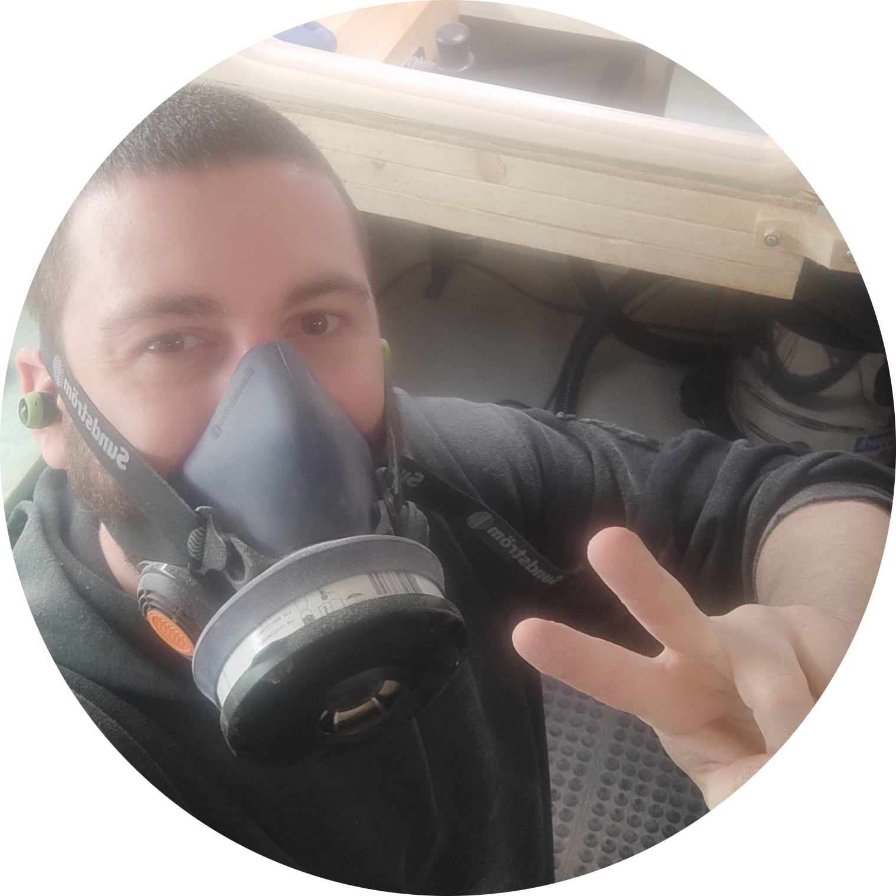

Über mich

Gitarrist, Techniker, Liebhaber
Als leidenschaftlicher Musiker spiele ich selbst seit mehr als 15 Jahren und hatte nicht nur etliche Gitarren der unterschiedlichsten Hersteller in der Hand, sondern kann mittlerweile auch auf eine schöne Gitarrensammlung blicken.
Das Jahrelange begutachten, testen, verbessern und individualisieren meiner
Instrumente führte zu fortgeschrittenen Arbeiten an meinen Gitarren und schließlich zum
Bau meiner ersten eigenhändig angefertigten Gitarre!
Mit viel Hingabe und Liebe zum Detail, der bestmöglichen Beratung und künstlerischem Auge
biete ich meinen Kunden eine einmalige Erfahrung!